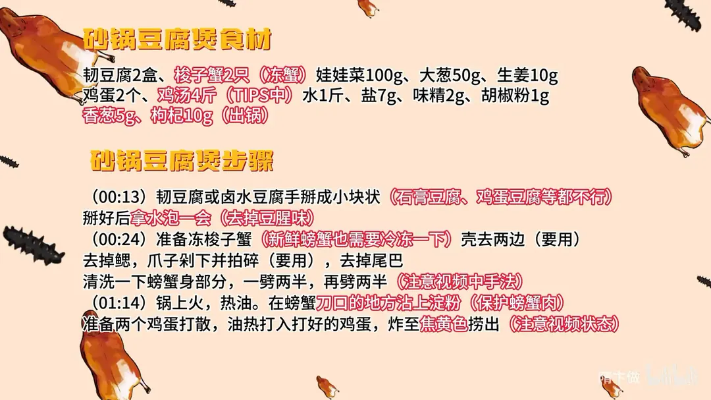
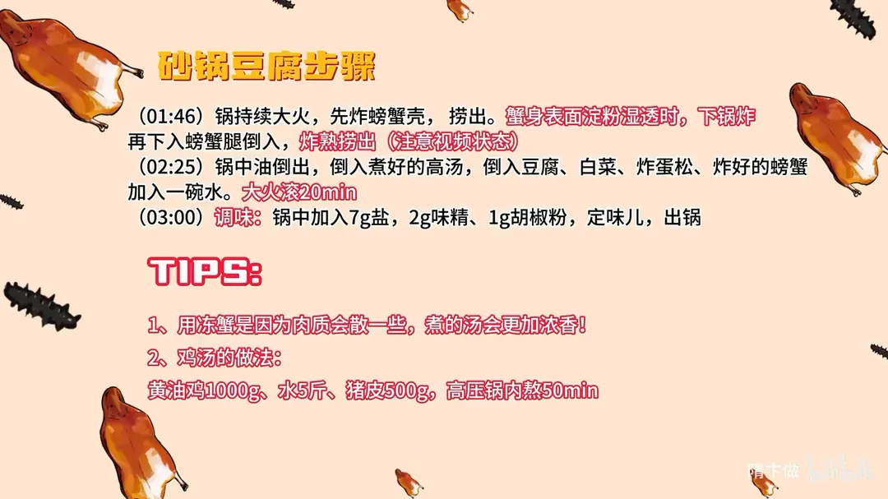

砂锅豆腐
隋卞一做。韧豆腐手掰成块泡水去豆腥，冻梭子蟹斩件、刀口拍粉，与蟹壳分别炸香，鸡蛋炸成蛋松；4 斤鸡汤加 1 斤水大火滚 20 分钟，最后用 7g 盐、2g 味精、1g 胡椒粉调味。
原视频：https://www.bilibili.com/video/BV1wy411B77d
食材
韧豆腐、梭子蟹 等 13 样
| 类别 | 用料 | 用量 |
|---|---|---|
| 主料 | 韧豆腐 | 2 盒 |
| 主料 | 梭子蟹（冻蟹） | 2 只 |
| 主料 | 鸡蛋 | 2 个 |
| 主料 | 娃娃菜 | 100g |
| 辅料 | 大葱 | 50g |
| 辅料 | 生姜 | 10g |
| 汤 | 鸡汤 | 4 斤 |
| 汤 | 水 | 1 斤 |
| 调料 | 盐 | 7g |
| 调料 | 味精 | 2g |
| 调料 | 胡椒粉 | 1g |
| 出锅 | 香葱 | 5g |
| 出锅 | 枸杞 | 10g |
步骤
- 掰豆腐：韧豆腐或卤水豆腐手掰成小块状，石膏豆腐、鸡蛋豆腐等都不行；掰好后拿水泡一会，去掉豆腥味。
- 处理螃蟹：准备冻梭子蟹，新鲜螃蟹也需要冷冻一下；壳去两边留用，去掉鳃，爪子剁下并拍碎留用，去掉尾巴；螃蟹身清洗一下，一劈两半，再劈两半。
- 炸蛋：锅上火、热油；另把 2 个鸡蛋打散，油热后打入鸡蛋，炸至焦黄色捞出。
- 炸蟹：在螃蟹刀口的地方沾上淀粉，保护蟹肉；锅持续大火，先炸螃蟹壳，捞出；蟹身表面淀粉湿透时下锅炸，再下入螃蟹腿，炸熟捞出。
- 滚汤：锅中油倒出，倒入煮好的 4 斤高汤，放入豆腐、100g 娃娃菜、炸蛋松、炸好的螃蟹，加入一碗水（约 1 斤），大火滚 20 分钟。
- 调味出锅：锅中加入 7g 盐、2g 味精、1g 胡椒粉定味儿，撒 5g 香葱、10g 枸杞即可出锅。
小贴士
- 用冻蟹是因为肉质会散一些，煮出的汤更加浓香。
- 鸡汤的做法：黄油鸡 1000g、水 5 斤、猪皮 500g，高压锅内熬 50 分钟。
讲解要点
难度：★★★☆☆（难点是备一锅浓鸡汤，以及炸蟹的火候）
为什么这么做
- 豆腐手掰不用刀切：掰出的断面粗糙有棱角，更容易挂住汤汁；刀切的面太平，炖出来发死、不入味。
- 掰完先泡水：泡掉表面的豆腥味，炖出来只剩豆香，口感接近刚出锅的豆花。
- 只用韧豆腐或卤水豆腐：石膏豆腐、内酯豆腐太嫩，滚 20 分钟会碎成渣，撑不住长时间炖。
- 蟹要用冻过的：冻蟹肉质松散，鲜味更容易析进汤里；鲜蟹肉紧，汤反而没那么浓。
- 刀口拍一层淀粉：淀粉在蟹肉表面形成保护膜，锁住水分，炸出来不发柴、不散。
- 鸡蛋炸到焦黄：蛋炸狠一点，香味才出得来，滚汤时这股蛋香会融进汤里；跟做炝锅面炒蛋是一个道理。
- 大火滚足 20 分钟：豆腐、白菜会出水稀释汤，必须用浓鸡汤打底并持续大火滚，豆腐才能炖到又嫩又软、味道不薄。
容易翻车
- 用刀切豆腐，或选了石膏豆腐、内酯豆腐，炖久易碎、挂不住味。
- 用鲜蟹直接下锅，肉太紧，汤不够浓香。
- 刀口不拍淀粉就下油，蟹肉会散、会老。
- 鸡蛋炸得太浅，滚汤时出不来那股蛋香。
- 汤滚不到 20 分钟就起锅，豆腐还是硬的，豆腥也没去净。
原片尾卡


原片文案
AI 字幕校准稿
砂锅豆腐真不是我吹，全网也没有人这么做过。豆腐要用北豆腐，手掰就行，别用刀切，手掰会更好吃。掰好拿水稍微泡一下，去掉一点豆腥味。
做这个菜一定要买冻蟹。哪怕你生活在海边，也建议买冻的：第一是便宜，第二是冻过之后肉质会稍微散一点。我们为了给你们做，买的是鲜蟹，回来以后又冻了一下。
蟹盖要留着，把两边切掉，腮去掉，用刀尖往上一刮就掉了。两个爪子剁下来，靠嘴的部分剁一下，尾巴鳍抠下来，清洗一下。要是买的母蟹，蟹黄千万别冲掉了；我们买的是公蟹。中间一劈两半，再劈一下，这只螃蟹就处理好了。
上火倒入干净油，准备两个鸡蛋打散，倒进热油里炸。要炸到焦黄色，炸得狠一点，等会儿滚汤的时候香味才能出来。这跟做炝锅面是一个道理，鸡蛋也要炒得稍微狠一点。
继续开大火，先炸螃蟹壳，炸红了捞出。螃蟹要在刀口的地方沾上淀粉，这样能保护蟹肉。等淀粉都湿透了、表面是一层湿淀粉，就可以下锅炸了；再把螃蟹腿倒进去，炸熟捞出。
油里倒点葱姜，这跟做菜没关系，只是炸过之后油就变香了，可以继续用，也不浪费。倒入调好的鸡汤，放上葱姜，把泡好的豆腐放进去，搁点白菜、炸蛋松和螃蟹，来碗水，大火滚就行，最快也得 20 分钟。
你看这个豆腐，炖到这样就好了，看着很嫩很软。咱们调味放盐、味精、胡椒粉。
首先这个汤本身非常非常的鲜，鸡蛋的鲜味、鸡汤的鲜味、螃蟹的鲜甜、白菜的甜都已经混出来了。你们就想象吧，这个汤到底鲜成什么样，就是给人活活美死。豆腐软嫩，豆香味也完全出来了，豆腐本身那种腥味、不好的味道都没有，很像刚出锅的豆花，很嫩很清淡，但味道不薄，它厚，是有浓度的。所以一是得用点汤，第二豆腐一定要选好，很关键。